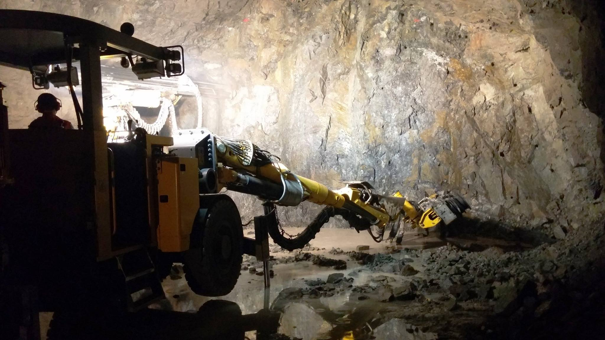

İnşaat projelerinin temel malzemelerinden biri olan kum, beton üretiminden sıva ve şap işlerine kadar geniş bir kullanım alanına sahiptir. Erzurum'da 2026 yılı itibarıyla 1 ton kum fiyatı; kumun cinsine (doğal dere kumu, kırma kum, yıkanmış kum), temin edildiği ocağın konumuna, nakliye mesafesine ve sipariş miktarına göre değişkenlik göstermektedir. Bu rehberde, Erzurum'da kum fiyatlarını etkileyen tüm faktörleri, farklı kum çeşitlerinin yaklaşık fiyat aralıklarını ve en uygun kum tedariği için dikkat edilmesi gerekenleri bulacaksınız.
⚠️ Güncel fiyat teklifi almak için lütfen iletişime geçiniz.
Fiyatlar; nakliye mesafesi, sipariş miktarı ve piyasa koşullarına göre anlık değişiklik göstermektedir.
Erzurum'da Kum Fiyatlarını Etkileyen Faktörler
- 🏭 Kumun Cinsi: Doğal dere kumu, yıkanmış kırma kum ve elenmiş ince kum arasında üretim maliyetleri farklıdır. Kırma kum, üretim süreci (konkasör, eleme, yıkama) nedeniyle doğal kuma göre genellikle daha maliyetlidir.
- 🚛 Nakliye Mesafesi: Kum ocağının veya stok sahasının şantiyeye olan uzaklığı, fiyatı doğrudan etkileyen en önemli faktörlerden biridir. Erzurum'da bazı ocaklar şehir merkezine 20-30 km mesafededir.
- 📦 Sipariş Miktarı: Tonaj arttıkça birim fiyat düşer. 1 ton (yaklaşık 0.6-0.7 m³) perakende alımlar, kamyon bazında (20-25 ton) toptan alımlara göre daha yüksek birim fiyata sahiptir.
- 🧼 Temizlik ve Kalite: Yıkanmış, ince maddeden arındırılmış, laboratuvar testli kumlar, yıkanmamış kumlara göre daha yüksek fiyatlıdır.
- ❄️ Mevsimsel Etkiler: Erzurum'da kış aylarında ocaklarda üretimin durması veya yavaşlaması, stoktaki malzemenin fiyatını geçici olarak yükseltebilir.
Kum Çeşitlerine Göre Fiyat Karşılaştırması (Yaklaşık Aralıklar)
Aşağıdaki tablo, Erzurum merkez için 2026 yılı ortalama fiyat aralıklarını göstermektedir. Nakliye hariç, ocak/tesis çıkış fiyatlarıdır.
| Kum Çeşidi | Tane Boyutu | Yaklaşık Fiyat Aralığı (TL/Ton)* | Kullanım Alanı |
|---|---|---|---|
| Doğal Dere Kumu (Yıkanmamış) | 0-3 mm | 350 - 450 TL | Grobeton, dolgu |
| Doğal Dere Kumu (Yıkanmış) | 0-3 mm | 450 - 550 TL | Sıva, şap, harç |
| Kırma Kum (Yıkanmamış) | 0-4 mm | 400 - 500 TL | Altyapı, stabilize |
| Kırma Kum (Yıkanmış, Bazalt) | 0-3 mm / 0-5 mm | 550 - 700 TL | Hazır beton (C25+) |
| İnce Sıva Kumu (Elenmiş) | 0-1 mm | 600 - 800 TL | İnce sıva, derz |
| Şap Kumu | 0-4 mm | 450 - 600 TL | Şap, kaba sıva |
*Fiyatlara KDV ve nakliye dahil değildir. Piyasa koşullarına göre değişkenlik gösterebilir.
1 m³ Kum Kaç Kg? Ton - m³ Dönüşümü
Kum siparişi verirken ton ve metreküp (m³) dönüşümünü bilmek önemlidir. Kumun yoğunluğu, nem oranına ve tane yapısına göre değişmekle birlikte ortalama değerler şöyledir:
- Kuru Kum: 1 m³ ≈ 1.400 - 1.500 kg (1.4 - 1.5 ton)
- Nemli Kum: 1 m³ ≈ 1.600 - 1.800 kg (1.6 - 1.8 ton)
- Yaklaşık Dönüşüm: 1 ton kum ≈ 0.65 - 0.70 m³
Örneğin, 10 m³ kuru kum ihtiyacınız varsa yaklaşık 14-15 ton sipariş vermeniz gerekir.
Erzurum'da Kum Alırken Dikkat Edilmesi Gerekenler
- ✅ Ocak ve Firma Güvenilirliği: Bilinmeyen veya merdiven altı satıcılardan alınan kumlar, kalite ve miktar (eksik tonaj) açısından risk taşır. ME-KA İnşaat gibi kurumsal ve kendi ocağı olan firmaları tercih edin.
- ✅ Numune ve Kalite Kontrol: Özellikle beton için alınacak kırma kumun ince madde oranı, granülometrisi ve temizliği mutlaka kontrol edilmelidir. Mümkünse yıkanmış kum tercih edin.
- ✅ Nakliye Dahil Fiyat Sorun: Fiyat teklifi alırken "ocak çıkışı" mı yoksa "şantiye teslim" mi olduğunu netleştirin. Aksi halde beklenmedik nakliye maliyetleri ile karşılaşabilirsiniz.
- ✅ Tartı Kontrolü: Gelen kamyonun boş ve dolu tartım fişlerini (kantar fişi) mutlaka isteyin. Tonaj kontrolü yapın.
- ✅ Toplu Alım Avantajı: Mümkünse ihtiyacınız olan kumu tek seferde ve kamyon bazında (20-25 ton) sipariş ederek birim fiyatta indirim kazanın.
📞 Erzurum'da En Uygun Kum Fiyat Teklifini Hemen Alın
ME-KA İnşaat, kendi bazalt ocaklarından ürettiği yıkanmış kırma kum, doğal kum ve her türlü agrega tedariğinde rekabetçi fiyatlar sunar. Ücretsiz fiyat teklifi ve keşif için ulaşın.
✅ Uygun fiyat + kaliteli kum + zamanında teslim
Sık Sorulan Sorular
1 ton kum kaç TL?
Kumun cinsine göre 350 TL ile 800 TL arasında değişmektedir. Güncel fiyat için firmamızla iletişime geçin.
1 m³ kum kaç ton eder?
Kuru kumda 1 m³ yaklaşık 1.4-1.5 ton, nemli kumda 1.6-1.8 tondur.
Erzurum'da en ucuz kum hangisi?
Yıkanmamış doğal dere kumu en ekonomik seçenektir; ancak beton ve sıva için kalitesi yeterli değildir.
Kum fiyatlarına nakliye dahil mi?
Genellikle ocak çıkış fiyatı verilir. Nakliye, mesafeye göre ayrıca ücretlendirilir. Teklif alırken mutlaka "şantiye teslim fiyat" isteyin.
Toplu kum alımında indirim olur mu?
Evet, kamyon bazında (20+ ton) ve sürekli alımlarda özel fiyat avantajları sunuyoruz.